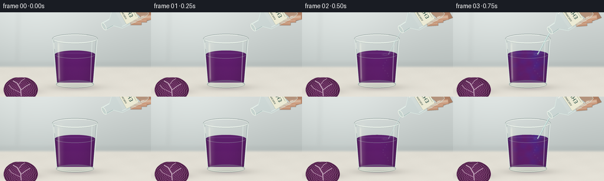
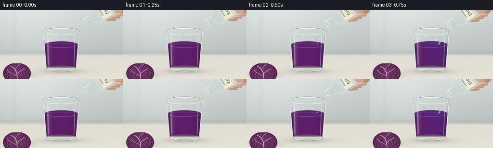
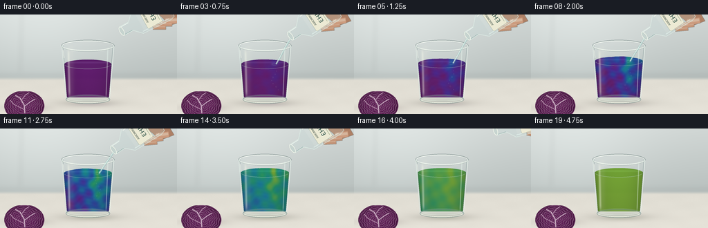
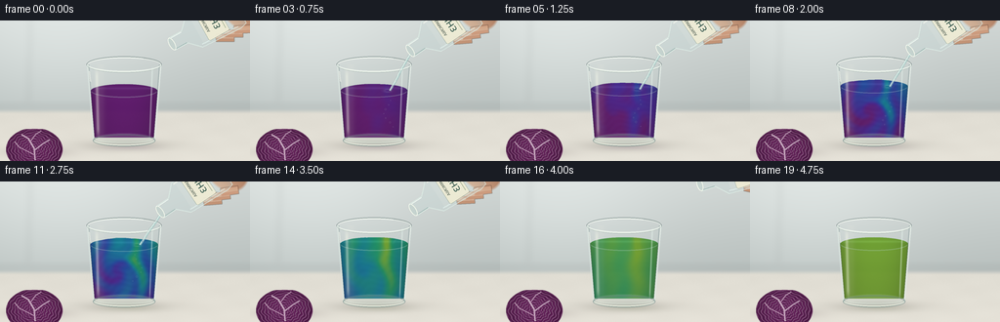

CODING AGENTS AS PIXEL WORLD MODELS
traex/GPT-6.1-Sol · material_0032
点击播放 · 原生 RGB 像素
逐轮保存的候选
回放视频、检查图与代码变化。
每份候选均可单独播放。实际图片检查记录在下方工具轨迹中。
候选 01播放与检查图
点击播放 · 原生 RGB 像素


展开代码变化
--- 上一保存版本
+++ 本次保存版本
@@ -0,0 +1,281 @@
+from pathlib import Path
+import math
+import numpy as np
+from PIL import Image, ImageDraw, ImageFilter, ImageFont
+import artifact_io
+
+ROOT=Path(__file__).resolve().parent
+W,H,S=256,144,4
+WW,HH=W*S,H*S
+Y,X=np.mgrid[0:HH,0:WW].astype(np.float32)/S
+rng=np.random.default_rng(72)
+noise=rng.normal(0,1,(HH,WW)).astype(np.float32)
+
+def smooth(a,b,x):
+ z=np.clip((x-a)/(b-a),0,1)
+ return z*z*(3-2*z)
+
+def comp(im,col,a):
+ a=np.clip(a,0,1)[...,None]
+ return im*(1-a)+np.asarray(col)*a
+
+def layer():return Image.new('RGBA',(WW,HH))
+def ellipse(d,box,fill,width=None):
+ b=tuple(int(round(v*S)) for v in box)
+ if width: d.ellipse(b,outline=fill,width=max(1,int(width*S)))
+ else:d.ellipse(b,fill=fill)
+def line(d,pts,fill,width=1):
+ d.line([(round(x*S),round(y*S)) for x,y in pts],fill=fill,width=max(1,round(width*S)),joint='curve')
+def poly(d,pts,fill):d.polygon([(round(x*S),round(y*S)) for x,y in pts],fill=fill)
+def over(im,p):
+ a=np.asarray(p).astype(np.float32)
+ return comp(im,a[...,:3],a[...,3]/255)
+
+# Soft window-lit background, gently textured pale stone work surface.
+back=np.empty((HH,WW,3),np.float32)
+wall=np.clip(Y/110,0,1)
+for c,(a,b) in enumerate([(208,179),(214,187),(212,185)]):back[...,c]=a+(b-a)*wall
+light=np.exp(-((X-62)/111)**2-((Y-26)/108)**2)
+back+=light[...,None]*16
+counter=smooth(90,96,Y)
+stone=np.stack([224+0.11*(Y-94),221+0.10*(Y-94),211+.10*(Y-94)],-1)
+stone+=1.0*noise[...,None]
+stone+=.6*(np.sin(X*.065+Y*.36)+np.sin(X*.12-Y*.20))[...,None]
+back=comp(back,stone,counter)
+# Distant unobtrusive cabinet seams, deliberately out of focus.
+p=layer();d=ImageDraw.Draw(p)
+line(d,[(31,0),(29,84)],(100,112,106,28),1.4)
+line(d,[(0,88),(256,88)],(243,246,237,55),1.3)
+back=over(back,p.filter(ImageFilter.GaussianBlur(3*S)))
+# Object contact shadows and a faint greenish transmitted caustic.
+shadow=np.exp(-((X-129)/45)**2-((Y-128)/5.4)**2)*.24
+back=comp(back,(81,78,69),shadow)
+shadow2=np.exp(-((X-40)/30)**2-((Y-135)/5)**2)*.22
+back=comp(back,(86,72,73),shadow2)
+
+# A small sliced red cabbage at the edge of the shot: textured veined cross section.
+def cabbage(im):
+ cx,cy=35,132
+ dx=(X-cx)/29;dy=(Y-cy)/22
+ r=np.sqrt(dx*dx+dy*dy)
+ angle=np.arctan2(dy,dx)
+ shape=(r<1)&(Y>111)
+ fold=r+.023*np.sin(7*angle+3*r)+.024*np.sin(14*angle-8*r)
+ rings=.5+.5*np.sin(58*fold+1.4*np.sin(5*angle))
+ veins=np.exp(-((rings-.93)/.065)**2)
+ white=veins*.77
+ color=np.zeros((HH,WW,3),np.float32)
+ color[:]=[84,30,76]
+ color+=((.5+.5*np.sin(52*fold))*20)[...,None]*np.array([1,.35,.85])
+ color= color*(1-white[...,None])+np.array([207,171,198])*white[...,None]
+ color+=noise[...,None]*2
+ color*= (.75+.25*np.sqrt(np.maximum(0,1-r*r)))[...,None]
+ im=comp(im,color,shape.astype(float))
+ # Bright branching stalks interrupt the tightly folded leaves.
+ p=layer();d=ImageDraw.Draw(p)
+ line(d,[(36,143),(35,131),(29,121),(22,117)],(213,188,205,220),1.5)
+ line(d,[(35,133),(44,126),(51,122)],(213,190,207,200),1.2)
+ line(d,[(31,124),(37,116),(42,113)],(209,180,201,185),.9)
+ line(d,[(36,138),(20,130),(15,124)],(213,181,203,190),1)
+ ellipse(d,(7,111,64,153),(104,41,95,170),.8)
+ return over(im,p)
+back=cabbage(back)
+
+# Glass geometry: circular tapered tumbler, with a substantial transparent foot.
+cx=127.0; rim=45.0; bottom=121.5
+rad=38.5-.082*(Y-rim)
+z=(X-cx)/rad
+glass=((np.abs(z)<1)&(Y>=rim)&(Y<=bottom))|(((X-cx)/32.2)**2+((Y-bottom)/7.3)**2<1)
+
+def glass_back(im):
+ a=glass.astype(float)*(.025+.07*np.abs(np.clip(z,-1,1))**6)
+ im=comp(im,(169,198,193),a)
+ # Rear lip remains visible over the transparent empty space.
+ p=layer();d=ImageDraw.Draw(p)
+ ellipse(d,(88.5,36.8,165.5,53.2),(89,107,107,120),.8)
+ ellipse(d,(89.6,38.0,164.4,52.1),(242,248,240,195),.8)
+ return over(im,p)
+
+palette=np.array([[91,17,105],[66,29,141],[27,65,155],[13,116,145],[23,139,96],[112,161,43]],np.float32)
+
+def fluid(im,t):
+ progress=np.clip((t-.10)/.79,0,1)
+ level=72.0-8.0*smooth(.1,.70,t)
+ yy=(Y-level)/(119-level)
+ r=rad-2.0
+ zz=(X-cx)/r
+ wave=(.30*np.sin(2*np.pi*t*2.2+(X-139)*.18)+.10*np.sin(X*.61+t*13))*math.sin(math.pi*min(1,max(0,(t-.09)/.77)))
+ # Curved top ellipse joining the cylindrical fluid volume.
+ liquid=((np.abs(zz)<1)&(Y>=level+wave)&(Y<=119.8)) | (((X-cx)/ (38.5-.082*(level-rim)-2))**2+((Y-level-wave)/7.0)**2<=1)
+ liquid &= glass
+ xn=(X-127)/35
+ yn=np.clip(yy,0,1)
+ envelope=math.sin(math.pi*progress)
+ # Smooth, evolving advected folds, with a high-pH plume at the incoming jet.
+ jetpath=.37 + .21*np.sin(yn*8.0-t*6)*yn
+ plume=np.exp(-((xn-jetpath)/(.12+.30*yn))**2)
+ swirl=.09*np.sin(yn*16+xn*6-t*7)+.075*np.sin(xn*12-yn*10+t*5)
+ reaction=progress+envelope*(.38*plume*(1-.50*yn)-.30*yn-.10*(1-xn)+swirl)
+ reaction=np.clip(reaction,0,1)
+ idx=reaction*5
+ i=np.minimum(idx.astype(int),4); f=(idx-i)[...,None]
+ color=palette[i]*(1-f)+palette[i+1]*f
+ # Beer-Lambert-like optical thickness: lit central core, dark purple/green edges.
+ optical=.76+.23*np.sqrt(np.maximum(0,1-zz*zz))
+ optical*=1-.10*yn
+ color*=optical[...,None]
+ # Delicate internal striae emphasize translucent mixing rather than a hard wipe.
+ bands=(np.sin(yn*49+xn*8+3*np.sin(xn*7-yn*5)+t*7)*.5+.5)
+ color+= (bands*3*envelope)[...,None]*np.array([.6,1,1.2])
+ color+=noise[...,None]*.55
+ opacity=np.where(liquid,.93,0)
+ im=comp(im,color,opacity)
+ # Surface seen from above: darker around the back, small silvery moving ripples.
+ rx=38.5-.082*(level-rim)-2
+ surf=((X-cx)/rx)**2+((Y-level-wave)/7)**2
+ top=surf<=1
+ topcol=color*.89+np.array([12,17,14])
+ topcol+=np.exp(-((Y-level+2.5)/1.2)**2)[...,None]*np.array([13,17,17])
+ im=comp(im,topcol,top*.82)
+ p=layer();d=ImageDraw.Draw(p)
+ ellipse(d,(cx-rx,level-7,cx+rx,level+7),(158,200,185,64),.55)
+ # Meniscus catches the window down its near edge.
+ d.arc(tuple(round(a*S) for a in (cx-rx+.8,level-6.6,cx+rx-.8,level+6.6)),8,172,fill=(202,221,213,100),width=2)
+ pouring= t>.10 and t<.73
+ if pouring:
+ phase=t*24
+ for j in range(3):
+ rr=3+((phase+j*1.5)%4.9)
+ alpha=int(90*(1-(rr-3)/5))
+ ellipse(d,(141-rr,level-rr*.30,141+rr,level+rr*.30),(215,237,219,alpha),.45)
+ for j in range(7):
+ bx=141+math.sin(j*5.31+t*8)* (3+j*.4)
+ by=level+9+j*4.5+(t*7)%3
+ br=.42+(j%3)*.2
+ ellipse(d,(bx-br,by-br,bx+br,by+br),(191,226,206,66),.4)
+ return over(im,p),level
+
+# Ray-like reflection streaks and refraction in the heavy glass base.
+def glass_front(im,t):
+ side=np.abs(z)
+ edge=np.exp(-((side-.987)/.028)**2)*.50*glass
+ im=comp(im,(223,235,230),edge)
+ dark=np.exp(-((side-.944)/.016)**2)*.28*glass
+ im=comp(im,(79,104,108),dark)
+ # Large softbox reflection, narrowing and bending with the wall.
+ streak=np.exp(-((X-(98.8+.023*(Y-49)))/1.6)**2)
+ streak*=smooth(47,58,Y)*(1-smooth(110,123,Y))*glass*.40
+ im=comp(im,(251,252,236),streak)
+ streak2=np.exp(-((X-(155.9-.038*(Y-49)))/.69)**2)*glass*.48
+ streak2*=smooth(46,53,Y)*(1-smooth(113,123,Y))
+ im=comp(im,(234,249,241),streak2)
+ broad=np.exp(-((X-103)/4.2)**2)*glass*.08
+ im=comp(im,(255,248,231),broad)
+ # Thick transparent bottom and contact ring, with distorted liquid tint above.
+ foot=((X-cx)/32.1)**2+((Y-121.8)/6.5)**2<1
+ im=comp(im,(174,199,188),foot*.18)
+ p=layer();d=ImageDraw.Draw(p)
+ ellipse(d,(95,116.8,159,129.1),(107,133,130,165),.85)
+ d.arc(tuple(round(a*S) for a in (96,118,158,128)),0,179,fill=(244,250,234,205),width=4)
+ d.arc(tuple(round(a*S) for a in (99,119,155,125)),3,165,fill=(229,243,229,170),width=2)
+ line(d,[(90.1,48),(96.2,120)],(245,248,239,130),.7)
+ line(d,[(164.3,47),(158.3,120)],(253,255,247,160),.7)
+ ellipse(d,(88.5,36.8,165.5,53.2),(104,124,121,115),.65)
+ d.arc(tuple(round(a*S) for a in (89,37.3,165,53.0)),0,178,fill=(242,250,240,220),width=4)
+ d.arc(tuple(round(a*S) for a in (90,37.5,164,52.5)),193,302,fill=(250,255,248,210),width=3)
+ line(d,[(91.2,51.7),(92,59),(92.6,62.6)],(255,255,245,150),1)
+ return over(im,p)
+
+# Reagent bottle raster in its own coordinates. Its axis extends from mouth toward base.
+BS=S
+bw,bh=52*S,89*S
+bottle=Image.new('RGBA',(bw,bh));d=ImageDraw.Draw(bottle)
+P=lambda pts:[(int((u+26)*S),int((v+3)*S)) for u,v in pts]
+outline=[(-7,0),(7,0),(7,15),(18,26),(20,70),(18,77),(-18,77),(-20,70),(-18,26),(-7,15)]
+d.polygon(P(outline),fill=(193,215,213,68))
+d.line(P(outline+[outline[0]]),fill=(222,239,231,190),width=3)
+d.polygon(P([(-16,29),(16,29),(18,68),(16,73),(-16,73),(-18,68)]),fill=(210,232,226,48))
+d.line(P([(-16,27),(-17,66),(-15,73)]),fill=(253,255,244,160),width=5)
+d.line(P([(15,27),(17,68)]),fill=(232,251,246,155),width=4)
+d.line(P([(-6,2),(-6,14)]),fill=(248,255,248,215),width=3)
+d.line(P([(6,2),(6,14)]),fill=(112,151,146,170),width=2)
+d.ellipse(tuple(int(v*S) for v in (19,0,33,6)),fill=(191,210,204,140),outline=(251,255,241,235),width=3)
+# A tiny paper reagent label, not a screen overlay.
+d.rounded_rectangle(tuple(int(v*S) for v in (10,38,42,62)),radius=2*S,fill=(237,235,213,249),outline=(155,172,152,150),width=S//2)
+fontpath='/usr/share/fonts/truetype/dejavu/DejaVuSans.ttf'
+try:
+ small=ImageFont.truetype(fontpath,4*S)
+ big=ImageFont.truetype(fontpath,9*S)
+except OSError:
+ small=big=ImageFont.load_default()
+d.text((14*S,40*S),'AMMONIA',font=small,fill=(66,82,72,255))
+d.text((16*S,47*S),'NH3',font=big,fill=(43,79,69,255))
+d.line([(14*S,59*S),(38*S,59*S)],fill=(141,159,126,255),width=S//2)
+B=np.asarray(bottle)
+
+def pour_bottle(im,t,level):
+ # A hand holds the body, mostly outside the crop. A gentle in-and-out tilt.
+ enter=smooth(.0,.16,t)
+ leave=smooth(.71,.89,t)
+ if t>=.89:return im
+ mx=176-12*enter+49*leave
+ my=24+7*enter-34*leave
+ angle=math.radians(29+5*enter-20*leave)
+ co,si=math.cos(angle),math.sin(angle)
+ # Clear stream descends under gravity from the bottle lip.
+ strength=smooth(.07,.15,t)*(1-smooth(.65,.75,t))
+ if strength>.01:
+ p=layer();d=ImageDraw.Draw(p)
+ points=[]
+ for q in np.linspace(0,1,80):
+ px=mx-20.8*q+1.0*np.sin(q*8+t*11)*q*(1-q)
+ py=my+3+(level-my-3)*q
+ points.append((px,py))
+ line(d,points,(113,159,159,int(122*strength)),2.5)
+ line(d,[(x-.55,y) for x,y in points],(234,248,240,int(215*strength)),1.1)
+ line(d,[(x+.55,y) for x,y in points],(183,222,216,int(195*strength)),.65)
+ for k in range(3):
+ q=(t*2.7+k*.32)%1
+ px=mx-20.8*q;py=my+3+(level-my-3)*q
+ ellipse(d,(px-.45,py-.95,px+.45,py+.95),(250,255,247,int(100*strength)))
+ im=over(im,p)
+ # Inverse transform of the transparent bottle.
+ dx=X-mx;dy=Y-my
+ u=dx*si+dy*co
+ v=dx*co-dy*si
+ # Warm cropped fingertips behind the glass body.
+ p=layer();d=ImageDraw.Draw(p)
+ def pt(u,v):return (mx+u*si+v*co,my+u*co-v*si)
+ poly(d,[pt(-18,51),pt(-29,57),pt(-32,76),pt(-16,87),pt(31,85),pt(26,64),pt(13,61)],(174,128,101,255))
+ for j in range(3):
+ a=pt(16+j*1.0,43+j*10); b=pt(25+j*.4,59+j*10)
+ # Rounded fingertip at each gripping position.
+ line(d,[a,b],(194+j*5,147+j*4,118+j*4,255),8.5)
+ line(d,[(a[0]-.8,a[1]-.8),(b[0]-.8,b[1]-.8)],(215,173,143,200),3.8)
+ im=over(im,p.filter(ImageFilter.GaussianBlur(.3*S)))
+ ix=np.round((u+26)*S).astype(int);iy=np.round((v+3)*S).astype(int)
+ valid=(ix>=0)&(ix<bw)&(iy>=0)&(iy<bh)
+ patch=np.zeros((HH,WW,4),np.float32)
+ patch[valid]=B[iy[valid],ix[valid]]
+ im=comp(im,patch[...,:3],patch[...,3]/255)
+ return im
+
+def generate():
+ frames=[]
+ for n in range(20):
+ t=n/19
+ im=back.copy()
+ caust=np.exp(-((X-132)/25)**2-((Y-130)/3.0)**2)*.08
+ im=comp(im,(138,161,98) if t>.5 else (147,97,165),caust)
+ im=glass_back(im)
+ im,level=fluid(im,t)
+ im=glass_front(im,t)
+ im=pour_bottle(im,t,level)
+ # Consistent film-like tonal rolloff, then high quality supersample resolve.
+ im=np.clip(im,0,255).astype(np.uint8)
+ image=Image.fromarray(im).resize((W,H),Image.Resampling.LANCZOS)
+ frames.append(np.asarray(image))
+ frames=np.stack(frames).astype(np.uint8)
+ artifact_io.save(frames,ROOT)
+
+if __name__=='__main__':generate()
候选 02播放与检查图
点击播放 · 原生 RGB 像素


展开代码变化
--- 上一保存版本
+++ 本次保存版本
@@ -114,7 +114,12 @@
# Smooth, evolving advected folds, with a high-pH plume at the incoming jet.
jetpath=.37 + .21*np.sin(yn*8.0-t*6)*yn
plume=np.exp(-((xn-jetpath)/(.12+.30*yn))**2)
- swirl=.09*np.sin(yn*16+xn*6-t*7)+.075*np.sin(xn*12-yn*10+t*5)
+ # Vortex-coordinate deformation gives continuous folded ribbons, not spots.
+ vx=xn*.65+.12; vy=yn-.52
+ vr=np.sqrt(vx*vx+vy*vy)
+ va=np.arctan2(vy,vx)+2.8*np.exp(-vr*3.4)*math.sin(progress*math.pi)*1.7
+ advected_x=vr*np.cos(va)/.65
+ swirl=.115*np.sin(advected_x*8+yn*2.5-t*5)
reaction=progress+envelope*(.38*plume*(1-.50*yn)-.30*yn-.10*(1-xn)+swirl)
reaction=np.clip(reaction,0,1)
idx=reaction*5
@@ -246,7 +251,12 @@
# Warm cropped fingertips behind the glass body.
p=layer();d=ImageDraw.Draw(p)
def pt(u,v):return (mx+u*si+v*co,my+u*co-v*si)
- poly(d,[pt(-18,51),pt(-29,57),pt(-32,76),pt(-16,87),pt(31,85),pt(26,64),pt(13,61)],(174,128,101,255))
+ palm=((u+1)/29)**2+((v-82)/22)**2
+ palm_alpha=np.clip((1-palm)*5,0,1)
+ skin=np.empty((HH,WW,3),np.float32)
+ shade=np.clip((v-58)/36,0,1)
+ for c,(a,b) in enumerate([(216,173),(174,126),(144,99)]):skin[...,c]=a+(b-a)*shade
+ im=comp(im,skin,palm_alpha)
for j in range(3):
a=pt(16+j*1.0,43+j*10); b=pt(25+j*.4,59+j*10)
# Rounded fingertip at each gripping position.
可观测工具轨迹
实际执行的命令与返回图片。
命令 1exit 0
/bin/bash -lc 'ls -la && cat prompt.txt && cat GENERATION_RULES.md && cat task_spec.json'
命令 2exit 0
/bin/bash -lc "cat artifact_io.py && python - <<'PY'
import numpy,PIL
print('ready')
PY"命令 3exit 0
/bin/bash -lc "cat > generate.py <<'PY'
from pathlib import Path
import math
import numpy as np
from PIL import Image, ImageDraw, ImageFilter, ImageFont
import artifact_io
ROOT=Path(__file__).resolve().parent
W,H,S=256,144,4
WW,HH=W*S,H*S
Y,X=np.mgrid[0:HH,0:WW].astype(np.float32)/S
rng=np.random.default_rng(72)
noise=rng.normal(0,1,(HH,WW)).astype(np.float32)
def smooth(a,b,x):
z=np.clip((x-a)/(b-a),0,1)
return z*z*(3-2*z)
def comp(im,col,a):
a=np.clip(a,0,1)[...,None]
return im*(1-a)+np.asarray(col)*a
def layer():return Image.new('RGBA',(WW,HH))
def ellipse(d,box,fill,width=None):
b=tuple(int(round(v*S)) for v in box)
if width: d.ellipse(b,outline=fill,width=max(1,int(width*S)))
else:d.ellipse(b,fill=fill)
def line(d,pts,fill,width=1):
d.line([(round(x*S),round(y*S)) for x,y in pts],fill=fill,width=max(1,round(width*S)),joint='curve')
def poly(d,pts,fill):d.polygon([(round(x*S),round(y*S)) for x,y in pts],fill=fill)
def over(im,p):
a=np.asarray(p).astype(np.float32)
return comp(im,a[...,:3],a[...,3]/255)
# Soft window-lit background, gently textured pale stone work surface.
back=np.empty((HH,WW,3),np.float32)
wall=np.clip(Y/110,0,1)
for c,(a,b) in enumerate([(208,179),(214,187),(212,185)]):back[...,c]=a+(b-a)*wall
light=np.exp(-((X-62)/111)**2-((Y-26)/108)**2)
back+=light[...,None]*16
counter=smooth(90,96,Y)
stone=np.stack([224+0.11*(Y-94),221+0.10*(Y-94),211+.10*(Y-94)],-1)
stone+=1.0*noise[...,None]
stone+=.6*(np.sin(X*.065+Y*.36)+np.sin(X*.12-Y*.20))[...,None]
back=comp(back,stone,counter)
# Distant unobtrusive cabinet seams, deliberately out of focus.
p=layer();d=ImageDraw.Draw(p)
line(d,[(31,0),(29,84)],(100,112,106,28),1.4)
line(d,[(0,88),(256,88)],(243,246,237,55),1.3)
back=over(back,p.filter(ImageFilter.GaussianBlur(3*S)))
# Object contact shadows and a faint greenish transmitted caustic.
shadow=np.exp(-((X-129)/45)**2-((Y-128)/5.4)**2)*.24
back=comp(back,(81,78,69),shadow)
shadow2=np.exp(-((X-40)/30)**2-((Y-135)/5)**2)*.22
back=comp(back,(86,72,73),shadow2)
# A small sliced red cabbage at the edge of the shot: textured veined cross section.
def cabbage(im):
cx,cy=35,132
dx=(X-cx)/29;dy=(Y-cy)/22
r=np.sqrt(dx*dx+dy*dy)
angle=np.arctan2(dy,dx)
shape=(r<1)&(Y>111)
fold=r+.023*np.sin(7*angle+3*r)+.024*np.sin(14*angle-8*r)
rings=.5+.5*np.sin(58*fold+1.4*np.sin(5*angle))
veins=np.exp(-((rings-.93)/.065)**2)
white=veins*.77
color=np.zeros((HH,WW,3),np.float32)
color[:]=[84,30,76]
color+=((.5+.5*np.sin(52*fold))*20)[...,None]*np.array([1,.35,.85])
color= color*(1-white[...,None])+np.array([207,171,198])*white[...,None]
color+=noise[...,None]*2
color*= (.75+.25*np.sqrt(np.maximum(0,1-r*r)))[...,None]
im=comp(im,color,shape.astype(float))
# Bright branching stalks interrupt the tightly folded leaves.
p=layer();d=ImageDraw.Draw(p)
line(d,[(36,143),(35,131),(29,121),(22,117)],(213,188,205,220),1.5)
line(d,[(35,133),(44,126),(51,122)],(213,190,207,200),1.2)
line(d,[(31,124),(37,116),(42,113)],(209,180,201,185),.9)
line(d,[(36,138),(20,130),(15,124)],(213,181,203,190),1)
ellipse(d,(7,111,64,153),(104,41,95,170),.8)
return over(im,p)
back=cabbage(back)
# Glass geometry: circular tapered tumbler, with a substantial transparent foot.
cx=127.0; rim=45.0; bottom=121.5
rad=38.5-.082*(Y-rim)
z=(X-cx)/rad
glass=((np.abs(z)<1)&(Y>=rim)&(Y<=bottom))|(((X-cx)/32.2)**2+((Y-bottom)/7.3)**2<1)
def glass_back(im):
a=glass.astype(float)*(.025+.07*np.abs(np.clip(z,-1,1))**6)
im=comp(im,(169,198,193),a)
# Rear lip remains visible over the transparent empty space.
p=layer();d=ImageDraw.Draw(p)
ellipse(d,(88.5,36.8,165.5,53.2),(89,107,107,120),.8)
ellipse(d,(89.6,38.0,164.4,52.1),(242,248,240,195),.8)
return over(im,p)
palette=np.array([[91,17,105],[66,29,141],[27,65,155],[13,116,145],[23,139,96],[112,161,43]],np.float32)
def fluid(im,t):
progress=np.clip((t-.10)/.79,0,1)
level=72.0-8.0*smooth(.1,.70,t)
yy=(Y-level)/(119-level)
r=rad-2.0
zz=(X-cx)/r
wave=(.30*np.sin(2*np.pi*t*2.2+(X-139)*.18)+.10*np.sin(X*.61+t*13))*math.sin(math.pi*min(1,max(0,(t-.09)/.77)))
# Curved top ellipse joining the cylindrical fluid volume.
liquid=((np.abs(zz)<1)&(Y>=level+wave)&(Y<=119.8)) | (((X-cx)/ (38.5-.082*(level-rim)-2))**2+((Y-level-wave)/7.0)**2<=1)
liquid &= glass
xn=(X-127)/35
yn=np.clip(yy,0,1)
envelope=math.sin(math.pi*progress)
# Smooth, evolving advected folds, with a high-pH plume at the incoming jet.
jetpath=.37 + .21*np.sin(yn*8.0-t*6)*yn
plume=np.exp(-((xn-jetpath)/(.12+.30*yn))**2)
swirl=.09*np.sin(yn*16+xn*6-t*7)+.075*np.sin(xn*12-yn*10+t*5)
reaction=progress+envelope*(.38*plume*(1-.50*yn)-.30*yn-.10*(1-xn)+swirl)
reaction=np.clip(reaction,0,1)
idx=reaction*5
i=np.minimum(idx.astype(int),4); f=(idx-i)[...,None]
color=palette[i]*(1-f)+palette[i+1]*f
# Beer-Lambert-like optical thickness: lit central core, dark purple/green edges.
optical=.76+.23*np.sqrt(np.maximum(0,1-zz*zz))
optical*=1-.10*yn
color*=optical[...,None]
# Delicate internal striae emphasize translucent mixing rather than a hard wipe.
bands=(np.sin(yn*49+xn*8+3*np.sin(xn*7-yn*5)+t*7)*.5+.5)
color+= (bands*3*envelope)[...,None]*np.array([.6,1,1.2])
color+=noise[...,None]*.55
opacity=np.where(liquid,.93,0)
im=comp(im,color,opacity)
# Surface seen from above: darker around the back, small silvery moving ripples.
rx=38.5-.082*(level-rim)-2
surf=((X-cx)/rx)**2+((Y-level-wave)/7)**2
top=surf<=1
topcol=color*.89+np.array([12,17,14])
topcol+=np.exp(-((Y-level+2.5)/1.2)**2)[...,None]*np.array([13,17,17])
im=comp(im,topcol,top*.82)
p=layer();d=ImageDraw.Draw(p)
ellipse(d,(cx-rx,level-7,cx+rx,level+7),(158,200,185,64),.55)
# Meniscus catches the window down its near edge.
d.arc(tuple(round(a*S) for a in (cx-rx+.8,level-6.6,cx+rx-.8,level+6.6)),8,172,fill=(202,221,213,100),width=2)
pouring= t>.10 and t<.73
if pouring:
phase=t*24
for j in range(3):
rr=3+((phase+j*1.5)%4.9)
alpha=int(90*(1-(rr-3)/5))
ellipse(d,(141-rr,level-rr*.30,141+rr,level+rr*.30),(215,237,219,alpha),.45)
for j in range(7):
bx=141+math.sin(j*5.31+t*8)* (3+j*.4)
by=level+9+j*4.5+(t*7)%3
br=.42+(j%3)*.2
ellipse(d,(bx-br,by-br,bx+br,by+br),(191,226,206,66),.4)
return over(im,p),level
# Ray-like reflection streaks and refraction in the heavy glass base.
def glass_front(im,t):
side=np.abs(z)
edge=np.exp(-((side-.987)/.028)**2)*.50*glass
im=comp(im,(223,235,230),edge)
dark=np.exp(-((side-.944)/.016)**2)*.28*glass
im=comp(im,(79,104,108),dark)
# Large softbox reflection, narrowing and bending with the wall.
streak=np.exp(-((X-(98.8+.023*(Y-49)))/1.6)**2)
streak*=smooth(47,58,Y)*(1-smooth(110,123,Y))*glass*.40
im=comp(im,(251,252,236),streak)
streak2=np.exp(-((X-(155.9-.038*(Y-49)))/.69)**2)*glass*.48
streak2*=smooth(46,53,Y)*(1-smooth(113,123,Y))
im=comp(im,(234,249,241),streak2)
broad=np.exp(-((X-103)/4.2)**2)*glass*.08
im=comp(im,(255,248,231),broad)
# Thick transparent bottom and contact ring, with distorted liquid tint above.
foot=((X-cx)/32.1)**2+((Y-121.8)/6.5)**2<1
im=comp(im,(174,199,188),foot*.18)
p=layer();d=ImageDraw.Draw(p)
ellipse(d,(95,116.8,159,129.1),(107,133,130,165),.85)
d.arc(tuple(round(a*S) for a in (96,118,158,128)),0,179,fill=(244,250,234,205),width=4)
d.arc(tuple(round(a*S) for a in (99,119,155,125)),3,165,fill=(229,243,229,170),width=2)
line(d,[(90.1,48),(96.2,120)],(245,248,239,130),.7)
line(d,[(164.3,47),(158.3,120)],(253,255,247,160),.7)
ellipse(d,(88.5,36.8,165.5,53.2),(104,124,121,115),.65)
d.arc(tuple(round(a*S) for a in (89,37.3,165,53.0)),0,178,fill=(242,250,240,220),width=4)
d.arc(tuple(round(a*S) for a in (90,37.5,164,52.5)),193,302,fill=(250,255,248,210),width=3)
line(d,[(91.2,51.7),(92,59),(92.6,62.6)],(255,255,245,150),1)
return over(im,p)
# Reagent bottle raster in its own coordinates. Its axis extends from mouth toward base.
BS=S
bw,bh=52*S,89*S
bottle=Image.new('RGBA',(bw,bh));d=ImageDraw.Draw(bottle)
P=lambda pts:[(int((u+26)*S),int((v+3)*S)) for u,v in pts]
outline=[(-7,0),(7,0),(7,15),(18,26),(20,70),(18,77),(-18,77),(-20,70),(-18,26),(-7,15)]
d.polygon(P(outline),fill=(193,215,213,68))
d.line(P(outline+[outline[0]]),fill=(222,239,231,190),width=3)
d.polygon(P([(-16,29),(16,29),(18,68),(16,73),(-16,73),(-18,68)]),fill=(210,232,226,48))
d.line(P([(-16,27),(-17,66),(-15,73)]),fill=(253,255,244,160),width=5)
d.line(P([(15,27),(17,68)]),fill=(232,251,246,155),width=4)
d.line(P([(-6,2),(-6,14)]),fill=(248,255,248,215),width=3)
d.line(P([(6,2),(6,14)]),fill=(112,151,146,170),width=2)
d.ellipse(tuple(int(v*S) for v in (19,0,33,6)),fill=(191,210,204,140),outline=(251,255,241,235),width=3)
# A tiny paper reagent label, not a screen overlay.
d.rounded_rectangle(tuple(int(v*S) for v in (10,38,42,62)),radius=2*S,fill=(237,235,213,249),outline=(155,172,152,150),width=S//2)
fontpath='/usr/share/fonts/truetype/dejavu/DejaVuSans.ttf'
try:
small=ImageFont.truetype(fontpath,4*S)
big=ImageFont.truetype(fontpath,9*S)
except OSError:
small=big=ImageFont.load_default()
d.text((14*S,40*S),'AMMONIA',font=small,fill=(66,82,72,255))
d.text((16*S,47*S),'NH3',font=big,fill=(43,79,69,255))
d.line([(14*S,59*S),(38*S,59*S)],fill=(141,159,126,255),width=S//2)
B=np.asarray(bottle)
def pour_bottle(im,t,level):
# A hand holds the body, mostly outside the crop. A gentle in-and-out tilt.
enter=smooth(.0,.16,t)
leave=smooth(.71,.89,t)
if t>=.89:return im
mx=176-12*enter+49*leave
my=24+7*enter-34*leave
angle=math.radians(29+5*enter-20*leave)
co,si=math.cos(angle),math.sin(angle)
# Clear stream descends under gravity from the bottle lip.
strength=smooth(.07,.15,t)*(1-smooth(.65,.75,t))
if strength>.01:
p=layer();d=ImageDraw.Draw(p)
points=[]
for q in np.linspace(0,1,80):
px=mx-20.8*q+1.0*np.sin(q*8+t*11)*q*(1-q)
py=my+3+(level-my-3)*q
points.append((px,py))
line(d,points,(113,159,159,int(122*strength)),2.5)
line(d,[(x-.55,y) for x,y in points],(234,248,240,int(215*strength)),1.1)
line(d,[(x+.55,y) for x,y in points],(183,222,216,int(195*strength)),.65)
for k in range(3):
q=(t*2.7+k*.32)%1
px=mx-20.8*q;py=my+3+(level-my-3)*q
ellipse(d,(px-.45,py-.95,px+.45,py+.95),(250,255,247,int(100*strength)))
im=over(im,p)
# Inverse transform of the transparent bottle.
dx=X-mx;dy=Y-my
u=dx*si+dy*co
v=dx*co-dy*si
# Warm cropped fingertips behind the glass body.
p=layer();d=ImageDraw.Draw(p)
def pt(u,v):return (mx+u*si+v*co,my+u*co-v*si)
poly(d,[pt(-18,51),pt(-29,57),pt(-32,76),pt(-16,87),pt(31,85),pt(26,64),pt(13,61)],(174,128,101,255))
for j in range(3):
a=pt(16+j*1.0,43+j*10); b=pt(25+j*.4,59+j*10)
# Rounded fingertip at each gripping position.
line(d,[a,b],(194+j*5,147+j*4,118+j*4,255),8.5)
line(d,[(a[0]-.8,a[1]-.8),(b[0]-.8,b[1]-.8)],(215,173,143,200),3.8)
im=over(im,p.filter(ImageFilter.GaussianBlur(.3*S)))
ix=np.round((u+26)*S).astype(int);iy=np.round((v+3)*S).astype(int)
valid=(ix>=0)&(ix<bw)&(iy>=0)&(iy<bh)
patch=np.zeros((HH,WW,4),np.float32)
patch[valid]=B[iy[valid],ix[valid]]
im=comp(im,patch[...,:3],patch[...,3]/255)
return im
def generate():
frames=[]
for n in range(20):
t=n/19
im=back.copy()
caust=np.exp(-((X-132)/25)**2-((Y-130)/3.0)**2)*.08
im=comp(im,(138,161,98) if t>.5 else (147,97,165),caust)
im=glass_back(im)
im,level=fluid(im,t)
im=glass_front(im,t)
im=pour_bottle(im,t,level)
# Consistent film-like tonal rolloff, then high quality supersample resolve.
im=np.clip(im,0,255).astype(np.uint8)
image=Image.fromarray(im).resize((W,H),Image.Resampling.LANCZOS)
frames.append(np.asarray(image))
frames=np.stack(frames).astype(np.uint8)
artifact_io.save(frames,ROOT)
if __name__=='__main__':generate()
PY
python generate.py"命令 4exit 0
/bin/bash -lc "python - <<'PY'
p='generate.py'
s=open(p).read()
s=s.replace('swirl=.09*np.sin(yn*16+xn*6-t*7)+.075*np.sin(xn*12-yn*10+t*5)', '''# Vortex-coordinate deformation gives continuous folded ribbons, not spots.
vx=xn*.65+.12; vy=yn-.52
vr=np.sqrt(vx*vx+vy*vy)
va=np.arctan2(vy,vx)+2.8*np.exp(-vr*3.4)*math.sin(progress*math.pi)*1.7
advected_x=vr*np.cos(va)/.65
swirl=.115*np.sin(advected_x*8+yn*2.5-t*5)''')
s=s.replace('poly(d,[pt(-18,51),pt(-29,57),pt(-32,76),pt(-16,87),pt(31,85),pt(26,64),pt(13,61)],(174,128,101,255))','''palm=((u+1)/29)**2+((v-82)/22)**2
palm_alpha=np.clip((1-palm)*5,0,1)
skin=np.empty((HH,WW,3),np.float32)
shade=np.clip((v-58)/36,0,1)
for c,(a,b) in enumerate([(216,173),(174,126),(144,99)]):skin[...,c]=a+(b-a)*shade
im=comp(im,skin,palm_alpha)''')
open(p,'w').write(s)
PY
python generate.py"视觉工具实际返回图片 1

视觉工具实际返回图片 2

保存候选 2 份；完成命令 4 次；可验证图片返回 2 张。原始 API 响应与完整日志保留在本地。